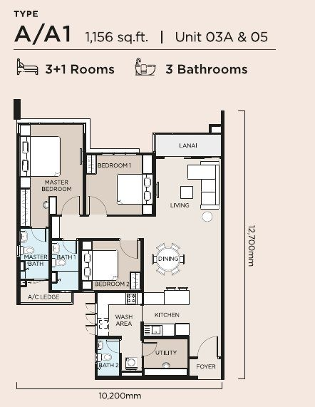
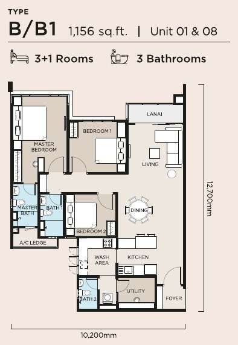
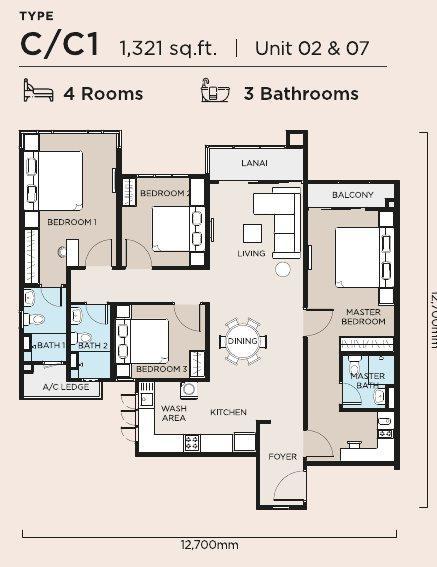
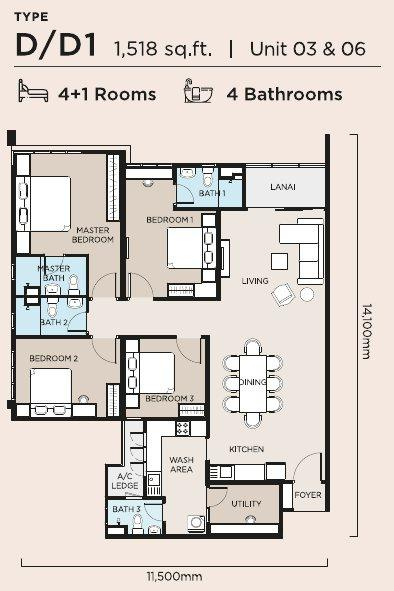

The Atas
About The Atas
Top Highlights
Project Details
| The Atas | |
| Maxim Global (Kaisar Maxim Sdn Bhd) | |
| 2024 | |
Location
- Mid Valley Megamall
- Nexus Bangsar South
- Bangsar Shopping Centre
- KL Sentral
Universiti Malaya Taman Desa Medical Centre - deMarket
Salak, SPRINT, NPE, Federal and KL-Seremban highways
The Atas Floor Plans & Unit Types

Type A / A1

Type B / B1

Type C / C1
